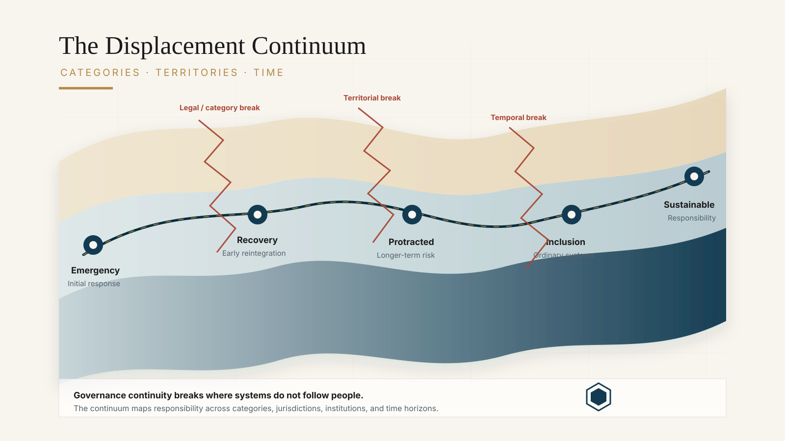
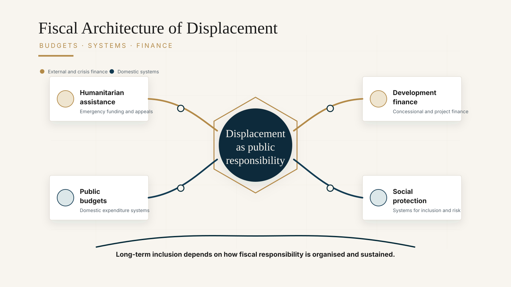

Framework
The Displacement Continuum
A governance diagnostic identifying where responsibility breaks down as displaced populations move across legal categories, institutions, territories, and time horizons.
Research
Research examining how responsibility for displaced populations is organised, financed, and sustained across institutions, public systems, and territories.
Much displacement policy remains organised around legal categories, humanitarian response, and emergency financing. This research explores a different question: how states absorb displacement through ordinary systems of governance.
Drawing on public administration, social protection, development finance, and displacement policy, the research focuses on the institutional arrangements that determine whether protection, services, and support continue as people move across legal categories, territories, and time.
Core Frameworks
Framework
A governance diagnostic identifying where responsibility breaks down as displaced populations move across legal categories, institutions, territories, and time horizons.
Framework
Embedding displacement-related vulnerability within ordinary public systems including health, education, social protection, civil registration, and local administration.
Framework
Examining how development-induced displacement often extends beyond project safeguards and why governance systems must absorb displacement after projects end.
Framework
Understanding displacement as a sovereign finance and public expenditure challenge rather than solely a humanitarian financing problem.
Featured Analysis
Governance Framework
Protection failures often occur where governance systems stop following people across categorical, temporal, and territorial boundaries.
The continuum provides a diagnostic for identifying these fault lines and understanding fragmentation as a consequence of institutional design.

Fiscal Framework
Long-term displacement is ultimately absorbed through budgets, social protection systems, infrastructure investment, and sovereign financing arrangements.
This framework examines how public finance shapes state absorption capacity and long-term inclusion.

Research Themes
Laws, mandates, institutions, and accountability systems that organise responsibility for displaced populations.
Social protection, health systems, education, registration, and local governance responses.
Sovereign finance, fiscal systems, infrastructure investment, development finance, and institutional absorption capacity.
Regional Application
The region combines sophisticated migration systems, social protection programmes, disaster-risk institutions, and development finance frameworks, yet persistent displacement governance gaps remain.
The Southeast Asia Displacement Governance Mapping project applies these frameworks to understand where governance systems break down and where institutional absorption remains possible.
Explore Mapping